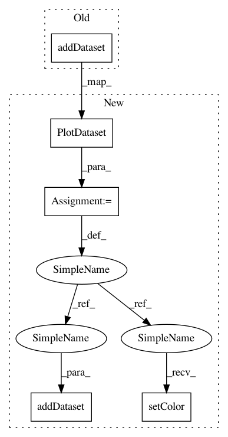

f37a2477721902d17410e75dfcde5df3b49db9ca,code/SecuML/Data/DescriptiveStatistics.py,FeatureDescriptiveStatistics,generateHistogram,#FeatureDescriptiveStatistics#,118
Before Change
barplot = BarPlot(x_labels)
for label, dataset in self.plot_datasets.iteritems():
hist, bin_edges = np.histogram(dataset.values, bins = bin_edges, density = False)
barplot.addDataset(hist, dataset.color, dataset.label)
output_filename = self.output_directory + "histogram.json"
with open(output_filename, "w") as f:
barplot.display(f)
After Change
barplot = BarPlot(x_labels)
for label, dataset in self.plot_datasets.iteritems():
hist, bin_edges = np.histogram(dataset.values, bins = bin_edges, density = False)
hist_dataset = PlotDataset(hist, dataset.label)
hist_dataset.setColor(dataset.color)
barplot.addDataset(hist_dataset)
output_filename = self.output_directory + "histogram.json"
with open(output_filename, "w") as f:
barplot.exportJson(f)
In pattern: SUPERPATTERN
Frequency: 3
Non-data size: 5
Instances
Project Name: ANSSI-FR/SecuML
Commit Name: f37a2477721902d17410e75dfcde5df3b49db9ca
Time: 2017-08-01
Author: anael.bonneton@ssi.gouv.fr
File Name: code/SecuML/Data/DescriptiveStatistics.py
Class Name: FeatureDescriptiveStatistics
Method Name: generateHistogram
Project Name: ANSSI-FR/SecuML
Commit Name: f37a2477721902d17410e75dfcde5df3b49db9ca
Time: 2017-08-01
Author: anael.bonneton@ssi.gouv.fr
File Name: code/SecuML/Classification/Monitoring/PredictionsBarplots.py
Class Name: PredictionsBarplots
Method Name: display
Project Name: ANSSI-FR/SecuML
Commit Name: f37a2477721902d17410e75dfcde5df3b49db9ca
Time: 2017-08-01
Author: anael.bonneton@ssi.gouv.fr
File Name: code/SecuML/Data/DescriptiveStatistics.py
Class Name: FeatureDescriptiveStatistics
Method Name: generateBinaryHistogram